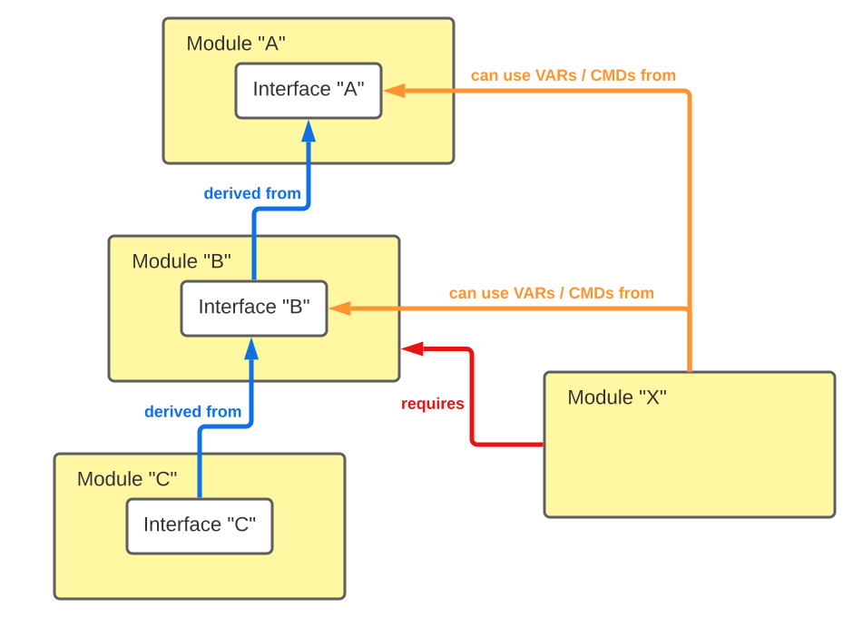
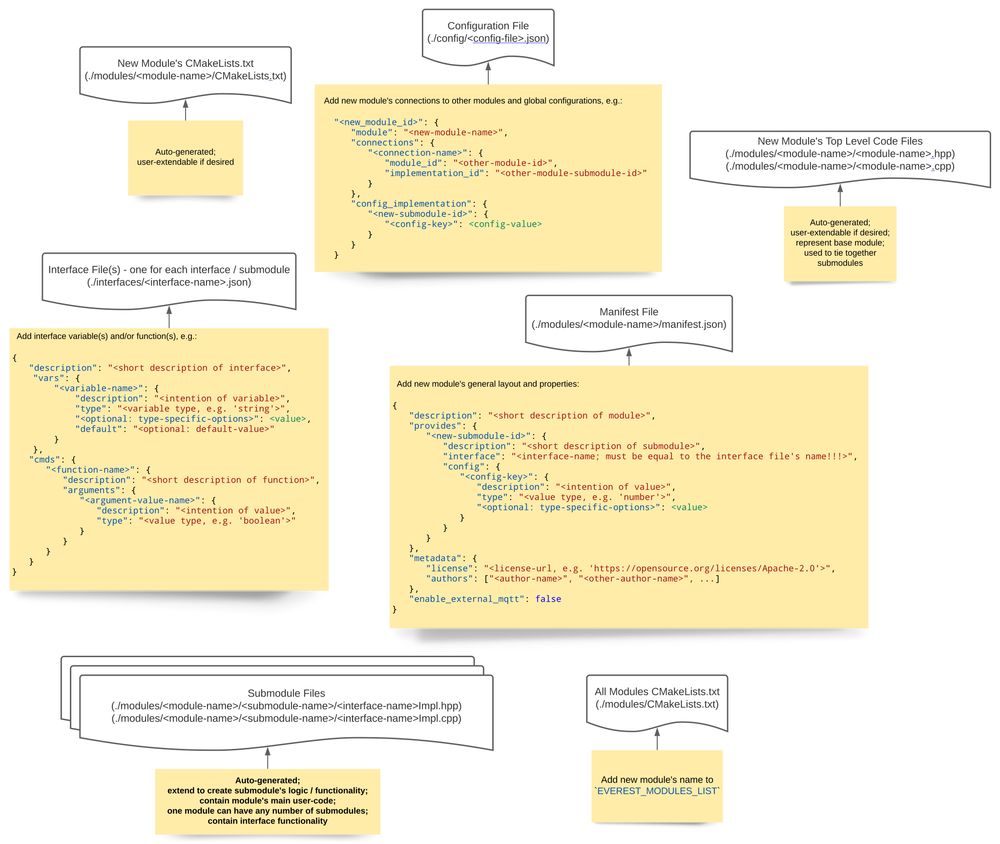
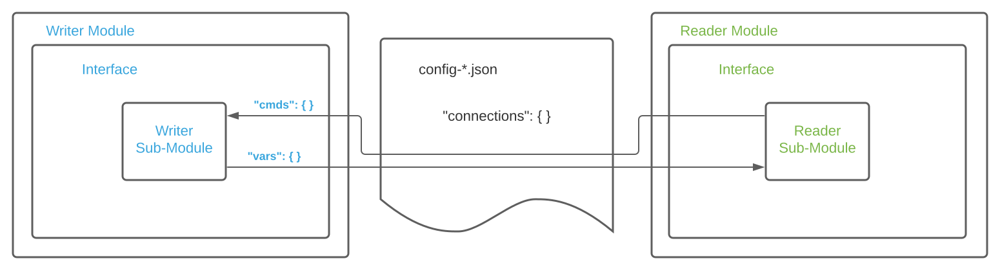
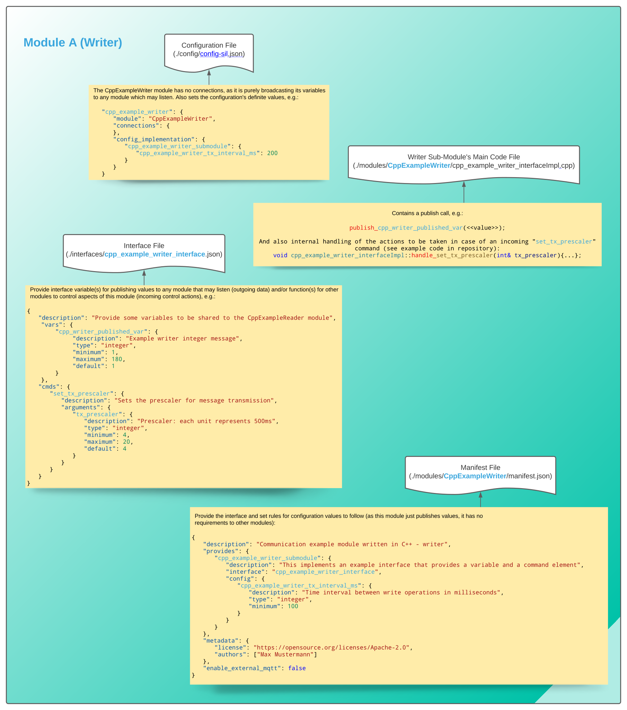
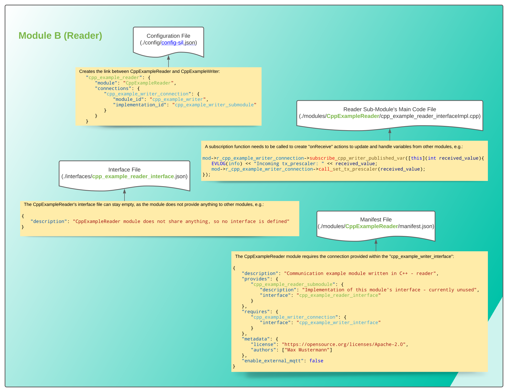

3.1. How To: Develop New Modules¶
3.1.1. 0. Introduction¶
You need to set up your workspace according to https://github.com/EVerest/everest-dev-environment/blob/main/dependency_manager/README.md
Make sure you can build the everest-core project before you start to develop modules.
After this, install the ev-cli tool by going into the directory /everest-utils/ev-dev-tools/ inside your workspace and call:
pip install .
3.1.2. 1. New directory¶
Create a new directory inside the modules directory of the everest-core directory inside your workspace. The name of your directory is the name of your new module. Please use the prefix “Js” for JavaScript modules to make them distinguishable from C++ modules without looking into the directory.
3.1.3. 2. Creating your module’s manifest¶
Every module needs a manifest file that describes the module and its dependencies. Make sure to familiarize yourself with JSON and JSON-schema. You will need it to define the config for your module as well as new interface definitions. Good documentation can be found here: https://json-schema.org/understanding-json-schema/reference/
Commented example manifest (all descriptions are mandatory and used to autogenerate your module’s documentation):
1{
2 "description": "Some oneliner describing your module and it's functions",
3 "config": {
4 // Config set for the whole module (including possible default values) declared as JSON schema
5 "some_config_key": {
6 "description": "This is a module-global config key",
7 "type": "string"
8 // the default value for the config key must be specified in the everest config
9 }
10 },
11 "provides": {
12 // List all provided interface implementations of this module alongside their interface implementation specific config.
13 // You can use an arbitrary name, but this name has to be specified in the everest config file when this module is loaded.
14 // For a module containing only one implementation you should use "main".
15 "main": {
16 "description": "This is the implementation of the interface 'interface_definition_used'.",
17 // The interface definition is a JSON file found in everest-framework/interfaces/interface_definition_used.json
18 "interface": "interface_definition_used",
19 // Config set for the implementation "main" (including possible default values) declared as JSON schema
20 "config": {
21 "some_implementation_local_config_key": {
22 "description": "This is a config key only visible to the part of your module implementing 'main'.",
23 "type": "integer",
24 "min": 4,
25 "max": 64
26 // the default value for the config key must be specified in the everest config
27 },
28 "some_other_config_key": {
29 "description": "This is some other config key",
30 "type": "string",
31 "minLength": 10,
32 "maxLength": 100
33 }
34 }
35 }
36 },
37 // this part lists all requirements on other modules, which your module may have
38 "requires": {
39 "requirement_name_used_in_config_file_later_on": {
40 "description": "Some optional text describing this dependency",
41 "interface": "the_interface_definition_the_required_module_has_to_implement"
42 },
43 "some_other_requirement_id": {
44 "description": "Some other optional text describing this dependency",
45 "interface": "other_interface"
46 }
47 },
48 "metadata": {
49 "base_license": "URI pointing to the base license of your module if you use code from another poject under a different license",
50 // license and authors is required
51 "license": "URI pointing to the license of your module, like: https://opensource.org/licenses/Apache-2.0",
52 "authors": ["Your name", "Some more name", "Third author name", "etc."]
53 },
54 "enable_external_mqtt": false // default value if not specified
55}
3.1.4. 3. Interface files¶
Make sure to familiarize yourself with JSON and JSON-schema. You will need it to define new interface definitions. Good documentation can be found here: https://json-schema.org/understanding-json-schema/reference/
The interface definitions that modules can implement or require are located in the /everest-core/interfaces/ directory inside your workspace.
An interface definition can contain two different kinds of declarations, VARs and CMDs.
* A CMD is an RPC command, the module implementing the interface provides for other modules. It can take zero or more named arguments and optionally return a result.
* A VAR is a value that is published by the module implementing the interface and can be consumed by other modules having a requirement for this interface (e.g. require a module implementing this interface).
Thus VARs exhibit push semantics where the publishing module drives the data exchange (e.g. decides when to publish something) whereas CMDs exhibit pull semantics (e.g. the module calling the CMD drives the data exchange).
Furthermore exchanging data via VARs means the consuming module has to define a requirement for the publishing module in it’s manifest whereas exchanging data via CMDs means the calling module (not the module consuming the cmd call) has to require the module it wants to call the CMD from.
Using CMDs is bidirectional (arguments and return values) whereas using VARs is unidirectional (e.g. you need module A and module B to define a requirement for each other and let each of them publish a VAR if you want to do a bidirectional data exchange via VARs).
Arguments and return values of CMDs as well as the values published in CMDs have to be described using JSON-schema (like the config entries in the manifest.json).
With all of this theroretical background in mind, let’s look at an actual real world example (all description fields are mandatory):
1{
2 "description": "Interface of authentication framework",
3 "cmds": {
4 "validate_token": {
5 "description": "Validate auth token and return result (with optional reason string)",
6 "arguments": {
7 "token": {
8 "description": "Arbitrary token string with min length 1 and max length 20",
9 "type": "string",
10 "minLength": 1,
11 "maxLength": 20
12 }
13 },
14 "result": {
15 "description": "Result object containing validation result enum value (key: result) and optional reason string (key: reason)",
16 "type": "object",
17 "required": ["result"],
18 "properties": {
19 "result": {
20 "type": "string",
21 "enum": ["Accepted", "Blocked", "Expired", "Invalid"]
22 },
23 "reason": {
24 "type": "string",
25 "minLength": 5
26 }
27 },
28 "additionalProperties": false
29 }
30 }
31 },
32 "vars": {
33 "authorized": {
34 "description": "New validated auth token provided",
35 "type": "string",
36 "minLength": 1,
37 "maxLength": 20
38 }
39 }
40}
Interface definitions can inherit from other interface definitions. This means you can extend a definition by inheriting from it and adding
new VARs / CMDs. You can not overwrite the definition of a VAR / CMD from the parent interface in the child, nor can you remove a VAR / CMD defined in the parent.
If one module requires another to implement a base interface, other modules derived from this one will need to match this requirement.
The module defining the requirement will not be able to use VARs / CMDs defined in the derived interface, only the ones defined in the interface it defined its requirement
for (and the VARs / CMDs defined in the parent interfaces of this interface, of course).
Example:
For three modules / interface definitions A, B and C defined like this:
[Image 1: Interface inheritance]
If new module X requires another module which implements interface B, it can use VARs / CMDs defined in A or B, but not those defined in C.
3.1.5. 4. Writing a module¶
3.1.5.1. 4.1. Writing a Js module: Creating some more essential files¶
If you want to write a JavaScript module, you can copy over the CMakeLists.txt file found in the directory of module JsPN532TokenProvider.
The CMakeLists.txt file is dynamic and will infer your module’s name from the directory name it resides in.
You need to create a package.json file, too.
This file lists all dependencies on external nodejs packages your module has, like it’s done in any other nodejs project.
You can specify an empty object {} if you do not have any dependencies on external packages.
The EVerest build system will automatically install all needed dependencies using npm.
[Image 2: Files to create/modify when adding a new Js module]
3.1.5.2. 4.2. Writing a C++ module: Creating some more essential files¶
To create the needed (template) files for your C++ module you have
to use the ev-cli tool installed in step 0.
At this point you should have created both a manifest.json file and an interface JSON file:
[Image 3: Files required for creating a C++ module via ev-cli]
Call (from inside the /everest-core/ directory in your workspace):
ev-cli mod create <your_module_name>
It will create a subdirectory for each provides key in
the manifest and also a top-level C++ file named <module_name>.cpp.
The top-level C++ file contains an init()
method and a ready() method called on module load
and framework ready() events
(see step 5 Module lifecycle).
The implementation for extended functionality should be
done on interface level (one step below in the submodules), though.
The C++ files in the generated subdirs (interface implementation level) contain all CMDs and VARs you have to define to implement the interface you specified in your manifest.
The resulting C++ module should look similar to this:
[Image 4: Files of a C++ module]
3.1.6. 5. Module lifecycle¶
Every module resides in it’s own process invoked by the everest-framework manager.
Upon loading a module, the init() method will be invoked by the framework.
Once all modules are loaded and initialized, the framework will call the ready() method.
Only in the ready() method or after the method was called, the module is allowed to call CMDs of other modules.
VARs can only be published inside the ready() method or after the ready() method was called.
Correspondingly, other modules will only receive new published VARs or get CMDs after their ready() method was called.
Modules cannot be stopped or unloaded. The creator of a new module is responsible to provide internal functionality to disable the module’s inner workings, should that be a desired state.
3.1.7. 6. Examples¶
Here are some examples given. Corresponding code files can be found amidst the everest-core project.
3.1.7.1. 6.1 Module components¶
3.1.7.1.1. 6.1.1. Example Js modules¶
- As an example of inter-module communication we will create two new modules:
A writer module (JsExampleWriter), which will send data to other modules and provide a function to control its own data-rate
A reader module (JsExampleReader), which will receive data from the writer module and control its data-rate
The new modules will be interconnected like this:
[Image 5: Connections between two modules]
- The JsExampleWriter module will provide two different interface objects:
an external variable (
writer-published-var) which provides data to other modulesan external function (
set-tx-prescaler()) with which other modules can control the writer module’s data-rate
[Image 6: Relevant file contents for writer module (JsExampleWriter)]
- The JsExampleReader module will:
subsribe to the variable
writer-published-var(of connection “example-writer-connection”) andcontrol the data-rate of the JsExampleWriter module via function
set_tx_prescaler()
[Image 7: Relevant file contents for reader module (JsExampleReader)]
The linking of both modules will be defined in the configuration (/everest-core/config/config-sil.json), where the JsExampleReader module receives a connection (”example-writer-connection”) to the “example_writer” submodule (”example_writer_submodule”).
[Image 8: Interconnection of key-value-elements between two modules’ JSON files (and the configuration file)]
3.1.7.1.2. 6.1.2. Example C++ modules¶
The C++ example will use the same setting as the previously outlined Js example: Two modules; one that publishes data and can be controlled by publicly accessable commands and one module to subscribe to the published data and call the other module’s command function.
The interconnection will be the same as in Image 5.
While in the Js modules all extended functionality was created directly in the top-level files, in the C++ modules this will happen lower, inside the interface implementation level documents (<submodule-name>Impl.<hpp/cpp>).
The everest-framework provides 4 different functions for data transmission between modules, two each for value-based data and for commands:
- Data transmission:
The function used for publishing a variable to other modules contains the name of the variable to be published. It follows the pattern:
publish_<variable-name>()and takes no arguments. It can be called anywhere in the interface submodule’s namespace.The corresponding function used to subscribe to such a published variable is called
subscribe_<variable-name>(), while just like the publishing function the “<variable-name>” needs to be set to the variable name from the other module’s interface JSON file. The argument of this function is either a reference to a callback function defined elsewhere, or a lambda function. Usually the subscribe function is set up in the module’sinit()function.
- Commands:
Commands which another module provides can be executed by a call function. Such a function is structured like this:
call_<cmd-name>(<args>), again replacing the “<cmd-name>” and “<args>” with the correct names/values as outined in the interface JSON file. The call function needs to be called from the correct place in theeverest-framework’s module list. This can be done by following the mod-pointer’s hierarchy to the submodule which provides the command, e.g.mod-><r/ro>_<interface-name>->call_<cmd-name>(<args>). You may have noticed that the interface name in the hierarchy is prefixed withr_orro_: This denotes if the addressed interface is"required"or"optional"and follows the definition in the interface’s JSON file.The module which provides the interface must thus implement a handler function. Following the introduced scheme, a handler function is set like this:
handle_<cmd-name>(<type>& arg1, <type>& arg2, ...). It can be installed as a method in the interface’s implementation class (class <interface-name>Impl) and will be automatically called by theeverest-framework.
Now, let’s have a look at the C++ example writer module. This module publishes a variable and waits for incomming calls to its command function. In the example here, the published variable is simply a counter. The command function is used to set a prescaler for the timed loop that governs the publishing of the aforementioned variable. The module’s basic setup is as follows:
[Image 9: Relevant file contents for C++ writer module (CppExampleWriter)]
The C++ example reader module subscribes to the variable which the example writer module publishes. It then uses the variable’s value in a call to the example writer’s command function. The most important parts of the example reader module’s functionality can be seen the following image:
[Image 10: Relevant file contents for C++ reader module (CppExampleReader)]
For a more detailed overview of the connections between manifest, interface JSON file, configuration and module code, please see Image 8.
3.1.7.2. 6.2. Further steps to make the project buildable¶
So far, the modules have been written (each in their corresponding folder in /everest-core/modules/), each module has defined an own interface (in the /everest-core/interfaces/ folder; note that the <Js/Cpp>ExampleReader ‘s interface is currently empty, as it provides no interface for other modules to use) and both modules have been linked (and possibly received configuration values) in the project’s config file (/config/config-sil.json). The last thing missing is to add the modules’ names (”JsExampleWriter” and “JsExampleReader” in case of Js modules or “CppExampleWriter” and “CppExampleReader” when creating C++ modules) to the project’s module list (EVEREST_MODULES_LIST in /modules/CmakeLists.txt).
If the modules’ code is correct, the project can now be successfully built from the /everest-core/build/ folder.
Run:
cmake .. && make -j$(nproc) install
And execute with:
../run-sil.sh